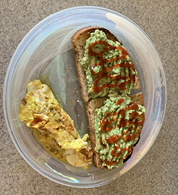
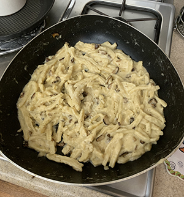
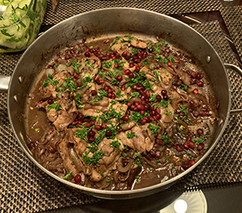

Avocado is an excellent source of essential nutrients, as are eggs. Perfect to start the day with!
Prepare the eggs and avocado toast separately, then serve together with avocado toast.
Cacio e Pepe is a classic Italian pasta dish, best made with homemade noodles.
Prepare the pasta and then cook in pan with unsalted butter, adding all ingredents.
Xo-Xo is an Armenian dish prepared differently depending on the region.
Prepare in one sautee pan and serve with red wine of your choice.